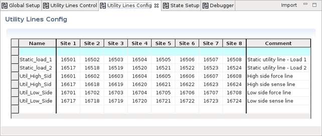
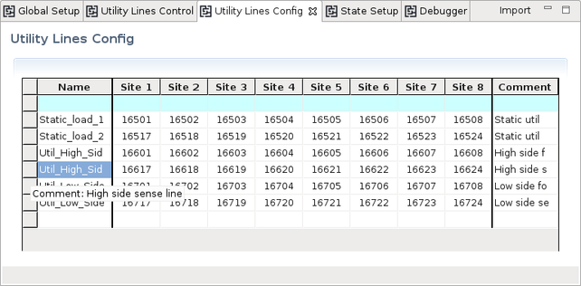

Routing Tools - Utility Lines Config editor
The assignment from utility tester channels to utility pins is defined in the Utility Lines Config editor.

"Name" column
The names for utility pins are defined in this column. These utility pins are shown in the heading row of the State Setup editor.
The utility pins that are defined in this column must be the same as defined in column Name of the Utility Pins editor.
"Site #" column(s)
The Site # column(s) define the tester channels respectively the utility pogo pins per utility pin name.
The utility pogo pins are to be defined using the five‑digit format for V93000 EXA Scale systems with the last two digits set to 01 … 32 for utility lines of the 4‑row pogo blocks.
The utility pogo pins that are defined in these columns must be the same as defined in the corresponding columns of the Utility Pins editor.
Filter row
The uppermost row with the blue background may be used to filter user entries according to selected contents.
"Import" button
The Import button in the upper right corner of the tab allows you importing the utility pins that have been defined using the Utility Pins editor. All existing settings of the configuration table are deleted and all settings including the comments are imported from the selected pin configuration file.
Mouseover and column width
Often the comment column will not be visible. To display the comment, you can hover the mouse pointer over the leftmost column.Adapting the column width is also supported. Position the mouse pointer on the delimiter between two columns in the header row and drag the column width to your needs.

Functional changes
- Introduced in SmarTest 7.4.4
- SmarTest 7.5.1: New "Import" button